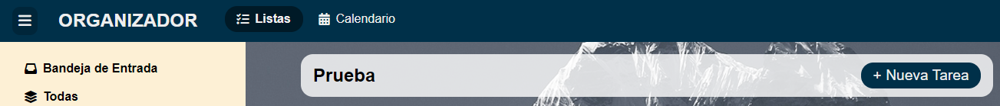
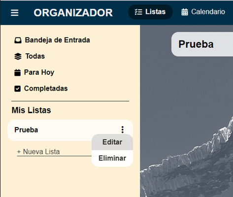

¿En qué podemos ayudarte?
Lista de soluciones:
¿Como crear una nueva lista de tareas?
Una lista de tareas personalizada nos ayudara a poder ordenar las tareas que realicemos, como lo puede ser
tareas del trabajo, estudios, actividades personales, entre otros.
Para poder agregar una nueva lista de tareas realizamos los siguientes pasos:
Nos dirigimos al menú de la parte izquierda de la pantalla.
En la sección de Mis listas encontraremos “+ Nueva lista”. Damos click y colocamos el nombre de la nueva lista.
Damos Enter. Podremos ver como se agrego correctamente la nueva lista.
¿Como agregar una nueva tarea?
Para agregar una nueva tarea nos iremos al botón de “+ Nueva Tarea” ubicado a la parte derecha de la pantalla y damos click
Nos aparecerá una ventana en la que colocaremos el nombre de la tarea, el día de la tarea, y la lista en la que queramos agregar esta tarea. Y damos en aceptar.
Podemos ver que se a creado correctamente la tarea que hemos agregado
¿Dónde encontrar mi calendario de actividades?
Para mostrar el calendario de actividades debemos de ubicarnos en la parte superior. Ahí encontraremos el botón Calendario.
Damos click y nos mostrara un calendario con todas las tareas que hemos agregado con sus respectivas fechas las cuales se le asigno al crearlas.
¿Como eliminar una tarea?
Nos dirigimos a la sección de la tarea que queremos eliminar.
Damos click en los tres puntos y nos aparecerá un recuadro y seleccionamos eliminar.
Nos mostrara un mensaje de confirmación y damos confirmar
¿Como eliminar una lista?
Nos iremos al menú de la parte izquierda, seleccionamos la lista que queremos eliminar dando click en los 3 puntos.
Nos aparecerá un mensaje en las cual nos preguntará si estamos seguro de eliminar la lista. Colocamos confirmar y se borrara la lista.
Atajos
alt+T: añadir nueva tarea en la lista seleccionada.
alt+L: añadir nueva lista.
shift+alt+L: eliminar la lista seleccionada